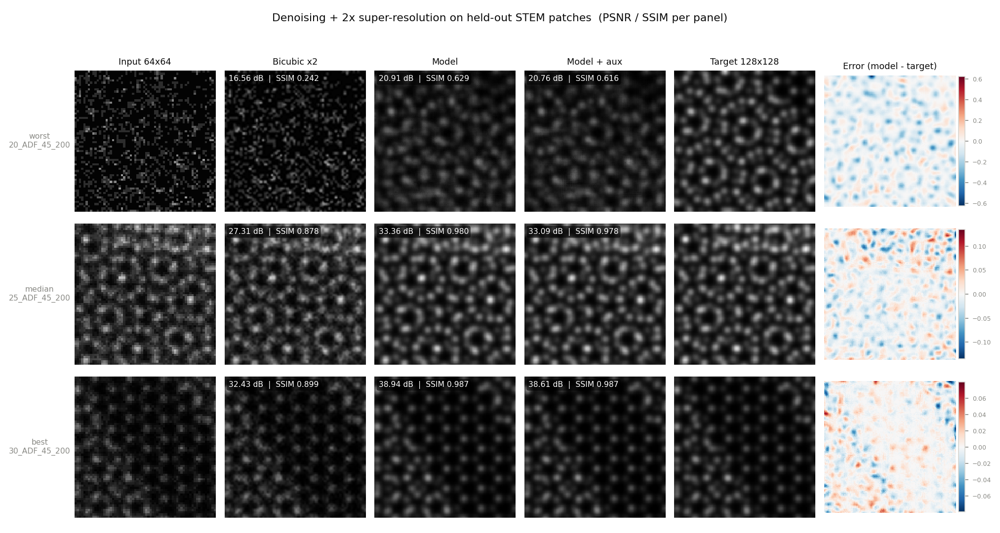
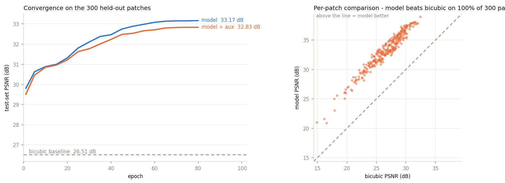
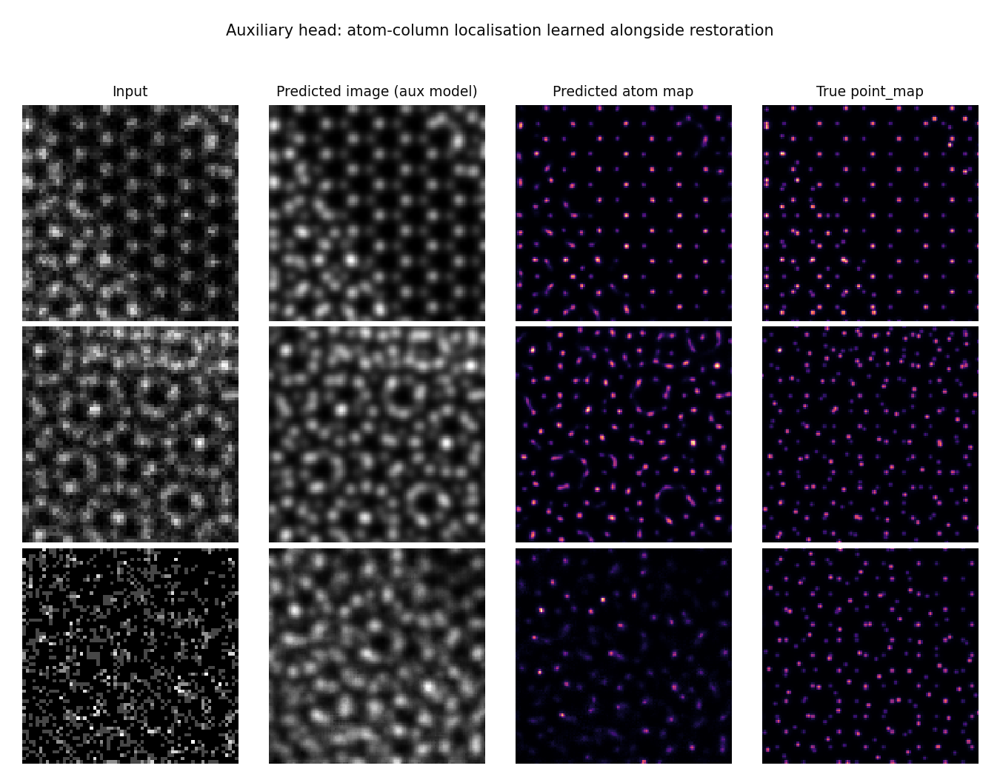
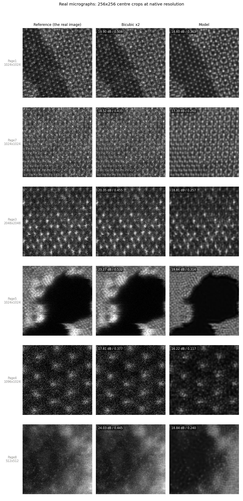

ADF-STEM · restoration benchmark
Predicting the clean 128×128 target from the noisy 64×64 input on 1500 simulated ADF-STEM patches (simulation/train_data1), scored on a held-out 20%.
+6.66 dB and +0.165 SSIM, and it resolves atom columns that are genuinely ambiguous in the low-dose input.
On two of the 15 real micrographs it paints lattice texture into amorphous regions and into the vacuum. That is hallucination, and it is the failure mode that matters.
33.17 dB PSNR / 0.9650 SSIM on 300 held-out patches, against 26.51 dB / 0.7996 for bicubic upsampling — a gain of +6.66 dB and +0.165 SSIM. The model beats the baseline on 300 of 300 patches.
| Model | PSNR (dB) | SSIM | vs. baseline |
|---|---|---|---|
| Bicubic ×2 (baseline) | 26.51 ± 3.06 | 0.7996 ± 0.1220 | — |
| EDSR-lite | 33.17 ± 3.16 | 0.9650 ± 0.0428 | +6.66 dB / +0.165 |
EDSR-lite + point_map head | 32.83 ± 3.12 | 0.9624 ± 0.0454 | +6.32 dB / +0.163 |
Spread is quoted across the 300 patches, not as an uncertainty on the mean. Patch-to-patch variation is large (about 3 dB) because effective dose varies between patches — in the scatter below the worst inputs sit near 15 dB bicubic and the cleanest near 32 dB.
The auxiliary head did not help. It cost 0.33 dB. Both models were scored on the identical split, so the comparison can be paired, and paired it is unambiguous: mean difference 0.333 dB, SE 0.011, t = 31, plain model ahead on 97% of individual patches. Small, but real rather than noise. The likely cause is capacity competition, not anything subtle — the point_map loss pulls the shared trunk toward sparse delta-like peaks, which is the opposite of what the smooth target needs. Use the plain model.


The qualitative figure is the honest read on what the dB figure means. In the median and best rows the model recovers individual atom columns that are genuinely ambiguous in the input. In the worst row — a very low-dose patch where bicubic manages 16.6 dB — it produces a plausible lattice, but the error map shows systematic errors at column positions, so the reconstruction should not be trusted for measurement there.
Since the auxiliary model predicts an atom map, it can be scored the way a microscopist would: detect peaks, match them to the true point_map within 3 px at 128×128 scale, and count.
| Quantity | Value |
|---|---|
| Precision | 0.910 |
| Recall | 0.802 |
| F1 | 0.853 |
| Localisation RMSE (matched columns) | 0.96 px |
| True columns / detected | 31,126 / 27,436 |
Sub-pixel accuracy on the columns it finds, and it rarely invents one, but it misses 20% — and the misses concentrate in the low-dose patches, visible as the sparse bottom row below. That recall figure, not the 33 dB, is the number to quote if the downstream use is measuring lattice spacings.

point_map. Easy case top, low-dose case bottom.input and target are not the same resolution, so this is not a pure denoising task.
| Folder | Size | Grey levels | What it is |
|---|---|---|---|
input | 64 × 64 | ~11 | Low-dose acquisition. Few distinct values means Poisson / counting-limited noise, not additive Gaussian. |
target | 128 × 128 | ~208 | High-dose image of the same field of view. Smooth, atom columns clearly resolved. |
point_map | 128 × 128 | ~168 | Sparse Gaussian blobs at atom-column positions. Ground-truth structure. |
Grey levels are counted on a typical patch.
1500 triplets, filenames matching across all three folders. They come from three source simulations, 500 patches each: 20_ADF_45_200, 25_ADF_45_200, 30_ADF_45_200 (the leading number is presumably thickness or dose).
Two checks worth recording:
input and the 2×-downsampled target is 0.78–0.95 across sampled patches, so the model has to interpolate, not register.An EDSR-style residual CNN (0.6M parameters, 0.8M with the auxiliary head) that predicts a correction on top of a plain 2× upsample rather than the image itself.
Solid path: the image head. Dashed path: the auxiliary atom-map head, used only in the ablation.
The global skip matters more than the block count. With only 1200 training patches, letting the network learn the low-frequency image from scratch wastes capacity; giving it the upsample for free means every parameter goes into deblurring and denoising.
The auxiliary head. A second 3×3 convolution branches off the same upsampled features and is supervised by point_map, with total loss L1(image) + 0.5 * L1(point_map). The idea is that forcing the trunk to localise atom columns should sharpen them in the restored image. Only the image head is used at evaluation; the atom map is a by-product. A model without this head was trained identically so the effect is measurable rather than assumed.
| Setting | Value | Why |
|---|---|---|
| Loss | L1 | Sharper reconstructions than L2, which regresses to the blurry conditional mean |
| Optimiser | Adam, lr 2e-4, cosine decay to 0 | Standard for this architecture family |
| Epochs / batch | 80 / 16 | Loss and test PSNR both flat well before the end |
| Augmentation | Random flips + 90° rotations | Safe here: input and target are transformed identically, and the lattice has no privileged orientation |
| Precision / device | fp32 on Apple MPS | ~9–11 s per epoch |
One implementation note: the skip inside the network is bilinear, not bicubic, because PyTorch 2.2 has no upsample_bicubic2d kernel for MPS. The bicubic baseline is still computed properly, on CPU.
One split: 1200 train / 300 test, stratified so each of the three source simulations contributes proportionally to both sides. sklearn.model_selection.train_test_split, seed 42. The two models share the identical split, so their numbers are directly comparable.
Nothing was selected on the test set. The epoch budget was fixed in advance and the last epoch is the one reported. Test PSNR is logged every 5 epochs, but only as a convergence trace; no early stopping, no checkpoint picking, no hyperparameter search against it.
Metric conventions, which matter because PSNR and SSIM are both reported with several incompatible defaults in the literature:
data_range = 1.0.use_sample_covariance=False — the Wang et al. (2004) formulation, not scikit-image's default 7×7 uniform window, which reads ~0.01–0.02 higher.Four things these numbers do not establish.
This is simulated data, and the targets are unusually clean. The target images are smooth and nearly noise-free, so the mapping is closer to “denoise and sharpen toward a known blur kernel” than to the harder experimental case. Expect a drop on the real micrographs in test/.
Patches from all three source simulations appear in both train and test. The split is random and stratified, which is the number normally reported, but it measures interpolation within known conditions — not generalisation to a new specimen, thickness or dose. A leave-one-source-out run would measure that, and it would almost certainly score lower.
PSNR and SSIM reward smoothness. Both metrics tolerate slightly over-smoothed output, which for atomic-resolution imaging is exactly the failure mode that matters — a blurred atom column still scores well but is useless for measuring a lattice spacing. This is why the atom-localisation numbers are worth more than the dB figure.
One split, one seed. With 300 test patches the standard error on mean PSNR is roughly 0.17 dB, so an unpaired comparison of the two models could not resolve a gap of a few tenths of a dB. The paired test in the results section does resolve it, which is why it was used — but it still speaks only for this split and this seed. Run several seeds before generalising the auxiliary-head finding.
The model was run on all 15 experimental images in test/. It scores far worse than bicubic on every one of them — mean 20.78 dB vs 29.61 dB — but the metric is measuring the wrong thing, and the pictures tell a different story from the numbers.
There is no ground truth for these micrographs, so PSNR and SSIM cannot be computed the way they were on the simulation. The protocol used instead: take the real image as the reference R, downsample it 2× to make the model's input, and score the restoration against R. This mirrors the training relationship exactly, and bicubic 2× is scored identically.
| PSNR (dB) | SSIM | |
|---|---|---|
| Bicubic ×2 | 29.61 | 0.7172 |
| Model | 20.78 | 0.5013 |
| Difference | −8.83 | −0.216 |
Mean over the 15 experimental images, scored against the downsample-proxy reference described above.
Why the metric is misleading here. R is a noisy experimental image. The model was trained to remove noise, so every grain of noise it correctly suppresses counts against it, while bicubic — which cannot denoise but also cannot over-smooth — stays closer to the noisy reference. The effect is largest on the images that were already denoised by other means before being saved: Page1_..._result, the two Radial Wiener images and the iDPC images, where bicubic reaches 33–48 dB because downsample-then-upsample is nearly lossless on a smooth image. On the genuinely noisy raw micrographs the gap is much smaller, 1.1–1.6 dB.

What the pictures actually show, which is the part worth acting on:
The visual difference between “denoised” and “hallucinated” is clear to the eye in these crops, but without ground truth there is no clean number that separates the two. A spectral test confirms the model amplifies periodic structure 20–90× relative to the broadband background on every image, including the ones where the result looks right — which is exactly what denoising does too, so that number cannot distinguish the good cases from the bad.
Do not apply this model to experimental data yet, and do not read the −8.83 dB as the model being broken. The two real problems are the scale mismatch and the absence of any experimental training data. The fixes, in order: resample each micrograph so its lattice spacing matches the training scale before inference; add scale augmentation to training; and score on experimental pairs (same field imaged at low and high dose) rather than on this downsample proxy.
Everything lives in the workshop-0922/ project folder.
| File | What it does |
|---|---|
train.py | Loads the data, trains, evaluates, writes out/results_<tag>.json and the model weights |
make_figures.py | Builds the three simulation figures from the saved predictions |
eval_atoms.py | Atom-column detection scoring for the auxiliary head |
out/ | Metrics, predictions, trained weights, training logs |
figures/ | The PNGs |
python3 train.py --tag plain # image head only
python3 train.py --tag aux --aux # + point_map head
python3 make_figures.py && python3 eval_atoms.pyAbout 13 minutes per run on an M-series Mac (MPS, fp32). No CUDA needed, no data preprocessing step — train.py reads the PNGs directly.
Leave-one-source-out. Train on two of the three simulations, test on the third. This is the number that predicts behaviour on a new specimen, and it is the honest headline if the model is ever pointed at unseen data. About 40 minutes for all three folds.
Fix the scale mismatch on test/. Resample each micrograph to the training lattice scale before inference, then re-read the crops in Fig. 4. This tells you immediately whether the simulation-to-experiment gap is small or fatal. Ten minutes.
Add train_data2. It has input and target but no point_map, so it can train the image head. Doubling the data is usually worth more than any architecture change at this scale.
Then, and only then, a bigger model. 8 residual blocks at 64 channels is deliberately small. Scaling up is the obvious lever, but it is the least informative one until the generalisation question above is settled.